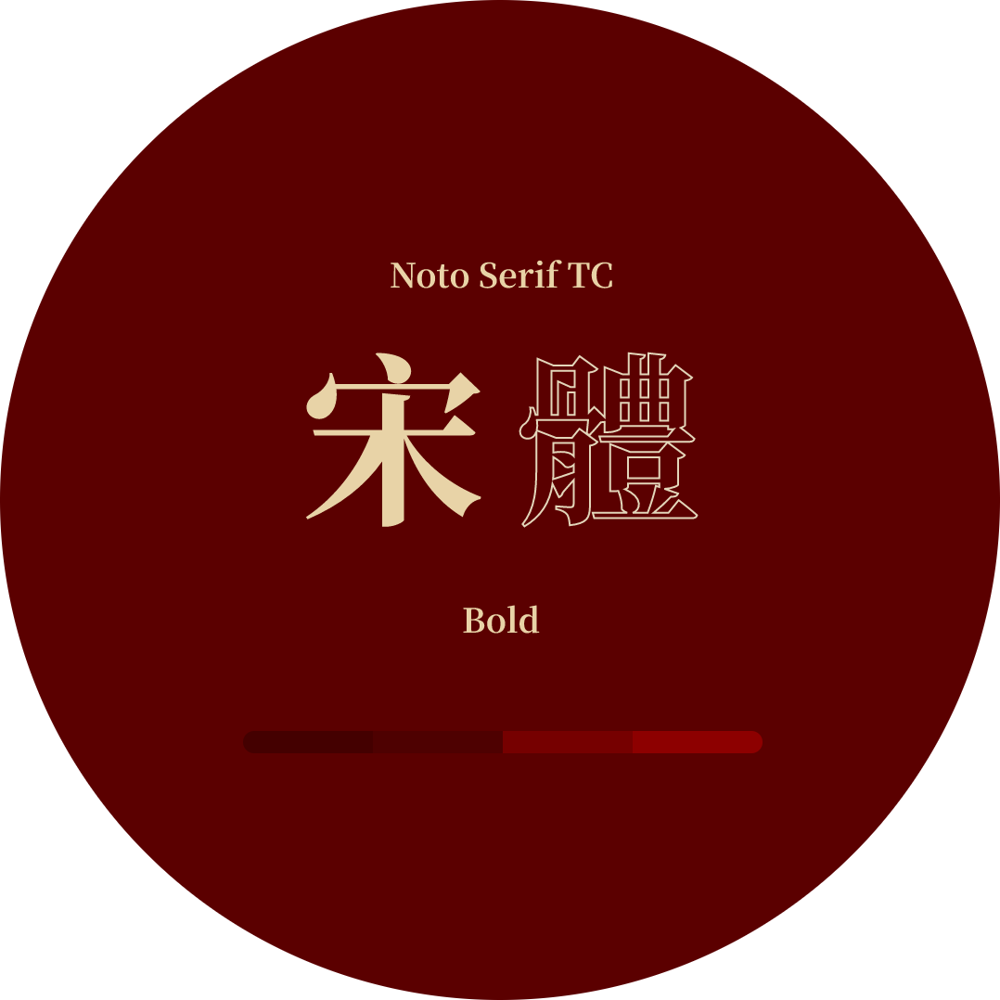
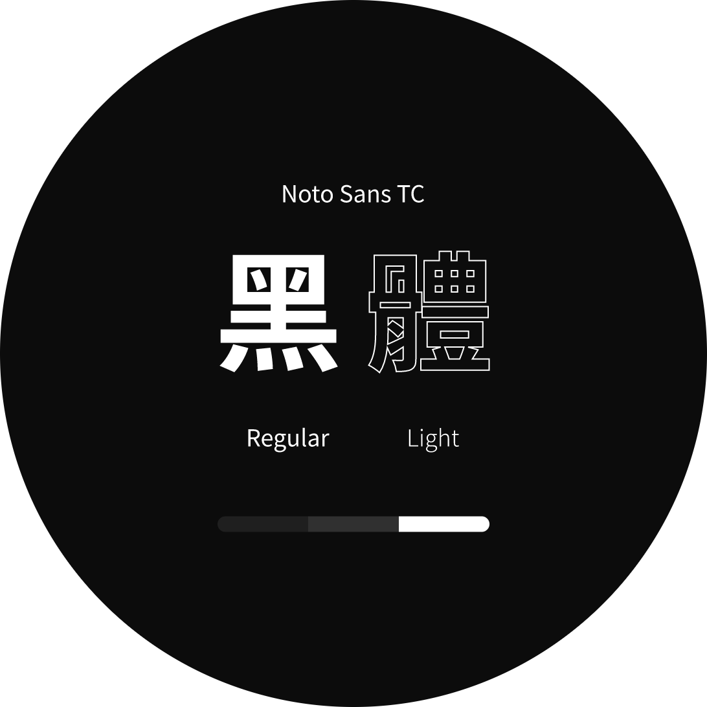

Home
Home
專案介紹
川巴子乾拌麵為台北東區「川巴子火鍋樓」旗下的拌麵品牌，也曾被譽為乾拌麵的始祖，主打熱門商品的蔥油拌麵和川味辣麵，迄今為止一直受到消費者的喜愛。
設計目標
在此專案中，目標增強企業品牌調性，使視覺一致化，並透過動態輔佐，引導潛在客戶了解商品特色與品項種類，進而去選購產品。
FONT & COLOR
配色上承襲「川巴子」的紅黑招牌以朱紅色為官網主色調，也藉以傳遞川巴子的麻辣印象，再以麵體的米白、招牌的黑色為輔色，讓整體配色與企業形象環環相扣。
標題字體選用稜角分明的中式宋體呼應品牌調性；內文則選擇可視性較好，易閱讀的思源黑體。



GRID LAYOUT
設定網格集中、左右留白居多的格式呈現視覺排列，並以垂直瀏覽的方式置中產品，引導瀏覽動線，既能區別出各區特色，亦能在使用者瀏覽上更清晰閱讀。

排版序列
構思 Wireframe 時，為了能在傳遞產品特色的同時不會過於攏墜，最終設計以排版置中的方式呈現，目的讓使用者能循序漸進導讀企業脈絡，從企業啟蒙至產品介紹再到最後料理的完成品，藉此強化潛在消費者的印象。

Banner
以料理成品結合 Slider 效果，設計於 Banner 區域，一目瞭然讓使用者清楚了解商品內容，迅速聚焦在產品本身。
產品動態
往下 Scroll 時，展現「產品縮放」與「品名交叉」的動態效果，加深產品印象同時增加網頁停留時間。


產品特點
在使用者瀏覽至最後產品特點區域時，擷取商品照並降低背景飽和，強化最終成品印象。